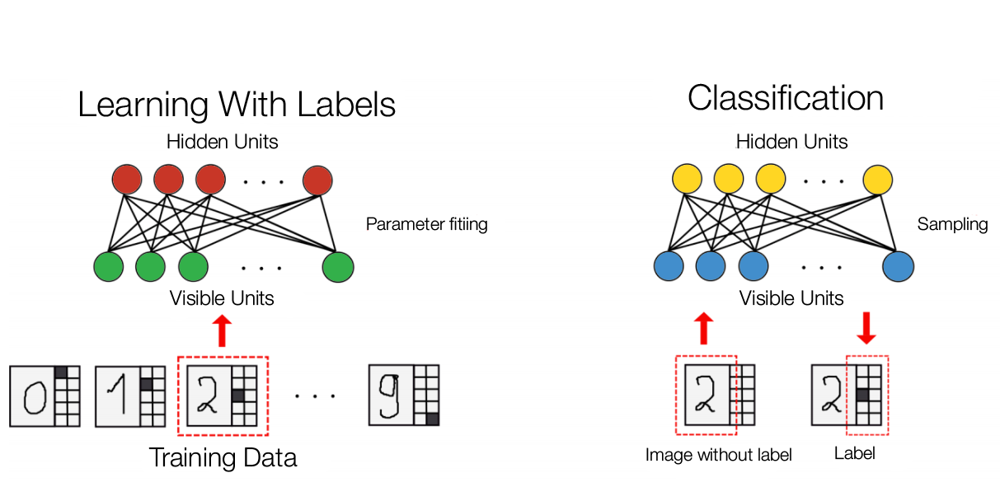

To facilitate our reasearch, we decided to implement our very own RBM. Here, we will discuss the process behind the implementation and the technical details behind it.
There are many uses of RBMs, one of which is to recognise handwritten digits. Our implementation of Handwritten Digit Recognition will be a “generative model” (12) which means that “after learning, the trained RBM can be used to generate sample from the learned distribution (12)”. This has been implemented using Java. Our RBM was trained with the MNIST database of handwritten digits (31) and using the 28x28 image and its label data, we trained it to regenerate as well as classify the given image.
In order to load the MNIST dataset, we used the methods DigitImageLoadingService and DigitImage as implemented by Vivin on Github (32).
Our RBM consists of 794 visible and 500 hidden units. Visible layer uses 784 units for data input from the MNIST training image and 10 units for the “ten binary indicator variable, one of which is set to 1 indicating that the image shows a particular digit while others are set to 0 (9)”. This allows RBM to “be used as classifiers (9)”.
Firstly, the RBM’s weights and biases are initialised. Each weight is randomly given a number which is uniformly distributed between -1/794 to 1/794. Both visible and hidden biases are initialised to be 0.
The RBM is then trained with “images of handwritten digits combined with ten binary indicator variables (9)” to learn the features of the MNIST training image and its labels. The learning method used is known as “Contrastive Divergence” (8) with k = 1, as discussed in the “How does it work?” section. Contrastive Divergence also “assumes that all of the visible and hidden units are binary.” (10)
The probability of “turning on a hidden unit” (10) is computed using the sigmoid function which is an energy function used in many RBMs. If the hidden units “probability is greater than a random number uniformly distributed between 0 and 1” (10), it is activated. Visible states have their units updated in a similar fashion. They use the hidden units as the input instead. A code snippet of how this works can be seen below.
// Updating the visible states
public void sampleVisible(double[] hiddenSample, double[] mean, double[] sample) {
for (int i = 0; i < numVisible; i++) {
mean[i] = propagateDown(hiddenSample, i, visibleBias[i]);
sample[i] = getBinomial(random, 1, mean[i]);
}
}
// Updating the hidden states
public void sampleHidden(double[] visibleSample, double[] mean, double[] sample) {
for (int i = 0; i < numHidden; i++) {
mean[i] = propagateUp(visibleSample, weight[i], hiddenBias[i]);
sample[i] = getBinomial(random, 1, mean[i]);
}
}
public double propagateUp(double[] visibleSample, double[] weight, double bias) {
double preSigmoidActivation = 0.0;
for (int i = 0; i < numVisible; i++) {
preSigmoidActivation += weight[i] * visibleSample[i];
}
preSigmoidActivation += bias;
return sigmoid(preSigmoidActivation);
}
public double propagateDown(double[] hiddenSample, int j, double bias) {
double preSigmoidActivation = 0.0;
for (int i = 0; i < numHidden; i++) {
preSigmoidActivation += weight[i][j] * hiddenSample[i];
}
preSigmoidActivation += bias;
return sigmoid(preSigmoidActivation);
}
Our implementation of RBM uses the single-step contrastive divergence algorithm as discussed, which we will call CD-1, in the “How does it work?” section. There are two phases in CD-1 which we will call the positive and negative phase. This is logically similar to equations (18) and (19) in the “How does it work?” section.
In the positive phase, the input sample “v” from the visible layer is “clamped” to the input layer, and then is propagated to the hidden layer. The result of the hidden layer activation is h.
In the negative phase, “h” from the hidden layer is propagated back to the visible layer with the new v, say v’. This is then propagated back to the hidden layer with activation result “h”.
Using the sampled data, the weights and biases are updated depending on the learning rate which is initialised to 0.5. The learning rate determines, as its name suggests, the rate at which the RBM learns. Increasing the learning rate would mean that the time taken to learn would be much shorted but the data is less accurate. The opposite is the case when the learning rate is low (34). The code for CD-1 can be seen below.
public void cd_1(double[] input, double learningRate) {
sampleHidden(input, positiveHMean, positiveHSample); //positive phase
gibbsHVH(positiveHMean, negativeVMean, negativeVSample,
negativeHMean, negativeHSample); // negative phase
for (int i = 0; i < numHidden; i++) {
for (int j = 0; j < numVisible; j++) {
weight[i][j] += learningRate * (positiveHMean[i] * input[j] - negativeHMean[i]
* negativeVSample[j]) / numTraining;
}
hiddenBias[i] += learningRate * (positiveHSample[i] - negativeHMean[i]) / numTraining;
}
for (int i = 0; i < numVisible; i++) {
visibleBias[i] += learningRate * (input[i] - negativeVSample[i]) / numTraining;
}
}
public void gibbsHVH(double[] hiddenSample, double[] negativeVMean,
double[] negativeVSample, double[] negativeHMean, double[] negativeHSample) {
sampleVisible(hiddenSample, negativeVMean, negativeVSample);
sampleHidden(negativeVSample, negativeHMean, negativeHSample);
}
In our implementation of the RBM, we perform CD-1 150 times. This is what we will call the “epoch(s)”. It does not refer to the number of Gibbs sampling, which is 1 since it is CD-1, but the number of times the RBM trains over the data. We are utilizing the MNIST data set and that contains 60,000 inputs. The training function with the epoch can be seen below.
public void train(int trainN) {
for (int epoch = 0; epoch < trainEpochs; epoch++) {
for (int i = 0; i < trainN; i++) {
rbm.cd_1(trainingData[i], learningRate);
}
}
}
Once the RBM has been through the training phase, it will then be able to reconstruction from valid input data. For example, if a valid image of 1 is given, the RBM will attempt to replicate it. When reconstructing, the RBM uses its trained weights, biases and the input data to propagate up to create the hidden layer output. Then for each visible layer, RBM propagates down to create the reconstructed image.
public void reconstruct(double[] visible, double[] reconstructedVisible) {
for (int i = 0; i < numHidden; i++) {
hidden[i] = propagateUp(visible, weight[i], hiddenBias[i]);
}
for (int i = 0; i < numVisible; i++) {
double preSigmoidActivation = 0.0;
for (int j = 0; j < numHidden; j++) {
preSigmoidActivation += weight[j][i] * hidden[j];
}
preSigmoidActivation += visibleBias[i];
reconstructedVisible[i] = sigmoid(preSigmoidActivation);
}
}
Classification depends on reconstruction. We can feed the RBM the images without labels and when the given input is reconstructed, there will be values generated at the label (9). The largest unit in the label is the value RBM classifies the given image as. The image below describes this process:

As the RBM is a generative model, it should be, in theory, possible to look “into the mind of a neural network”(8). We decided to implement a somewhat simpler version to generate from our RBM the digits.
First we tried “clamping” (8) the corresponding label unit to 1.0 and all of the other visible units to 0.0. Using the reconstruction as explained above, we generated the image. However, there was an issue with the reconstructed image being unclear, as the RBM was only turning on 1 / 794 of the visible nodes. This meant that the hidden units struggled to activate and thus reconstructed a poor image.
In order to overcome this issue, we amplified the input data to 794.0, to compensate for the lack of visible nodes turned on. We then “clamped” the corresponding label unit again in the reconstructed data by setting the corresponding label to 1.0 and the other label units to 0.0. We reconstruct this again and again until the image is clear (In this case, it was regenerated 5 times).
This is the result of the regeneration from the label data.